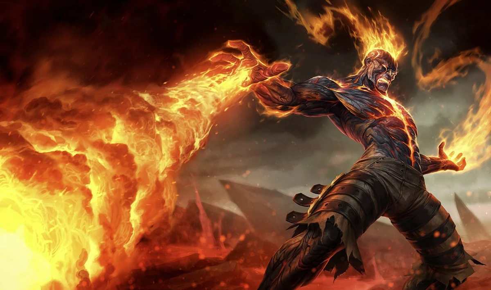
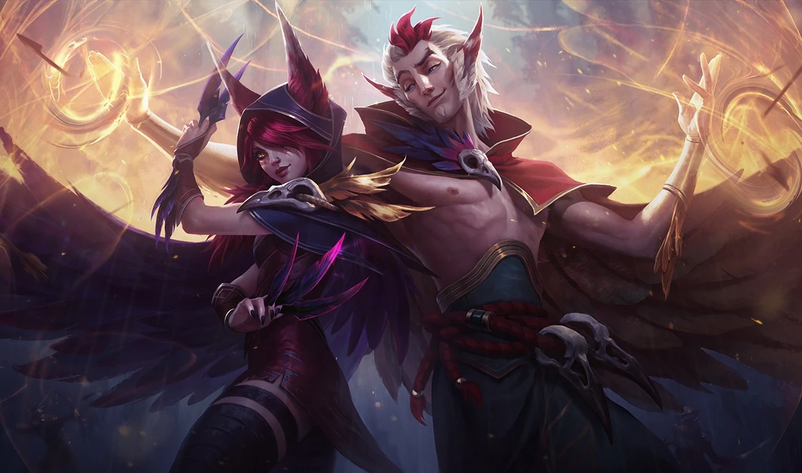

El soporte juega un papel clave protegiendo al ADC y ayudando al equipo con visión y control de peleas.
Tipos de Campeones en Soporte
- Engage: Inician peleas y controlan al enemigo. Ejemplo: Thresh, Leona, Nautilus.
- Protectores: Curan y protegen al equipo. Ejemplo: Janna, Lulu, Soraka.
- Poke: Hostigan desde lejos. Ejemplo: Zyra, Brand, VelKoz.
Consejos para Jugar en Soporte
- Coloca centinelas: Controlar la visión evita emboscadas.
- No solo protejas al ADC: También ayudá en otras partes del mapa.
- Sé proactivo: No esperes a que te ataquen, toma la iniciativa.
¿Que campeones se pueden jugar en este rol?

Brand
Campeón de daño en área y control de fuego. Ideal para destruir grupos de enemigos con su poder ígneo.

Rakan
Campeón de soporte y movilidad. Perfecto para iniciar peleas y proteger a su equipo con su agilidad y encanto.

Soraka
Campeona de curación y apoyo. Excelente para mantener con vida a sus compañeros de equipo durante las peleas más intensas.
¿Es un rol recomendado para principiantes?
- Sí, si te gusta: El rol de Support es una excelente elección si te motiva ayudar a tu equipo a alcanzar la victoria a través de visión, control de peleas y protección de los aliados. Es ideal si disfrutás de un estilo de juego estratégico, donde tu impacto no depende tanto del farmeo sino de las decisiones inteligentes y del manejo del mapa. Como support, vas a aprender habilidades fundamentales como colocar guardianes, controlar zonas importantes del mapa y proteger a tus compañeros en los momentos críticos. Además, si te gusta liderar, shotcallear o tener una visión global de la partida, este rol te permite ser una pieza clave en la toma de decisiones sin necesidad de ser quien más daño haga.
- No, si prefieres: Por el contrario, si preferís ser quien se lleve la gloria a través de kills o si te gusta escalar individualmente a través de recursos propios, el rol de Support puede no ser el más atractivo. El support muchas veces trabaja en las sombras, facilitando que otros brillen. También, es un rol que exige estar constantemente atento a las necesidades del equipo, por lo que si preferís un enfoque más solitario o que dependa solo de tus acciones individuales, quizás otros roles como Mid o ADC te resulten más satisfactorios. Además, la falta de farmeo constante puede ser frustrante si disfrutás de crecer económicamente por tus propios medios.